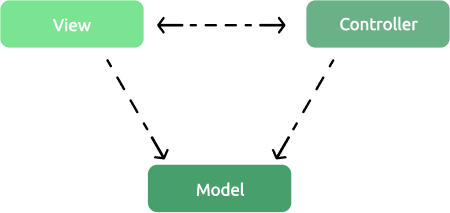
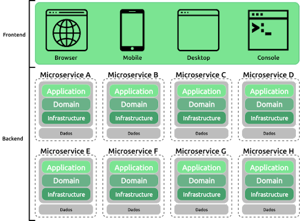

Arquitetura de Software
Equipe
A nossa equipe para a realização desse trabalho foi:

Gustavo José Costa Gregenski
- Número: 18
- Função: batata

Kaique Iglesias
- Número: 27
- Função: batata

Leticia Aparecida Ceccon
- Número: 31
Maria Eduarda Dos Santos
- Número: 34

Nathalia Cristine Rissardi
- Número: 36
Topicos:
Arquiteto de Software
Arquiteto de Sistemas,Soluções , SOA,de IT
Neste tópico, discutiremos o papel do arquiteto de sistemas, suas responsabilidades e suas designações.
Padrões de arquitetura
(MVC, Microservices, etc.)
Neste tópico, exploraremos os padrões de arquitetura, compreendendo sua definição, funcionalidade e ilustrando sua aplicação por meio de exemplos concretos
Arquitetura em camadas
(Camada de Apresentação,Lógica de Negócios,De dados, Etc.)
Exploraremos os conceitos fundamentais da Arquitetura em Camadas, detalhando cada parte de forma exemplificada e amplificada. Este estudo oferecerá uma compreensão abrangente dos princípios subjacentes a essa abordagem arquitetônica, destacando sua importância e aplicabilidade em sistemas de software
Boas práticas de design de software
(Separation of Concerns,Single Responsibility Principle,Open/Closed Principle,etc..)
Finalmente, exploraremos as melhores práticas de design e suas características. Neste contexto, as boas práticas de design referem-se a métodos consolidados e eficazes para criar sistemas de software robustos e eficientes. Isso inclui a consideração de fatores como modularidade, reutilização de código, separação de preocupações e escalabilidade. Ao implementar essas práticas, os desenvolvedores podem garantir que seus sistemas sejam mais fáceis de manter, atualizar e escalar, resultando em uma base sólida para o desenvolvimento de software de alta qualidade
Arquiteto de Software
Um arquiteto de software é um profissional responsável pelo projeto e pela estruturação de sistemas de software, garantindo que atendam aos requisitos de funcionalidade, desempenho, segurança e escalabilidade. Um arquiteto de software também pode ser designado por:
- Arquiteto de Sistemas
- Arquiteto de Soluções
- Arquiteto SOA (Arquiteto de soluções orientadas a serviços)
- Arquiteto SOA (Arquiteto de soluções orientadas a serviços)
Funçoẽs de um Arquiteto de software:
- Identifica as partes interessadas num projeto e suas necessidades
- Identifica os requisitos operacionais e os requisitos não-funcionais (rendimento, disponibilidade, escalabilidade, etc.)
- Desenha todo o sistema com base nos requisitos do projeto
- Escolhe e arquitetura de cada componente do sistema
- Escolhe as tecnologias para a aplicação de cada componente e das conexões entre eles
- Revisa os código e se assegurar da qualidade do projeto
- Faz o seguimento da arquitetura após a implementação do sistema
- Melhora a arquitetura de forma contínua
- Redige e colabora na produção da documentação do projeto
- Cria padrões de desenvolvimento uniformes na empresa
- Facilita o trabalho e ajuda mesmo a formar a equipe de software
Arquitetura de software
Padrão MVC:
O padrão MVC (Model-View-Controller) é uma arquitetura de software que separa a lógica de negócios (Model), a apresentação (View) e o controle das interações do usuário (Controller), facilitando a manutenção, escalabilidade e reutilização do código.
Clique aqui para saber mais da história do MVC.
Microsserviços
Arquitetura em micros serviços, tema apresentado no guia, se tornou popular na última década e se consolidou como uma opção na construção de soluções. Na relação com o uso de camadas, os micros serviços passam a ser uma divisão física orientada pelo domínio do negócio , e cada micros serviço pode ainda aplicar o uso das camadas lógicas citadas no tema Camadas.
São exemplos de Micro Serviços
Arquitetura em Camadas
A arquitetura em camadas é uma abordagem comum para organizar sistemas de software em diferentes níveis de abstração e responsabilidade. Aqui estão alguns exemplos de camadas comuns em aplicações de software. Ver Mais
- Camada de Apresentação (Presentation Layer):
- Camada de Lógica de Aplicação (Application Logic Layer):
- Camada de Acesso a Dados (Data Access Layer):
- Camada de Infraestrutura (Infrastructure Layer):
- Camada de Serviços (Service Layer):
- Camada de Segurança (Security Layer):
Boas práticas de design de software
São princípios e técnicas utilizadas para desenvolver sistemas de software eficientes, robustos, fáceis de manter e escaláveis. Essas práticas visam melhorar a qualidade do software, facilitar sua manutenção e aumentar a produtividade dos desenvolvedores.
Lista das Principais Boas Práticas
- Separation of Concerns (Separação de preocupações):
- Princípio de Responsabilidade Única (Single Responsibility Principle - SRP):
- Princípio Aberto/Fechado (Open/Closed Principle - OCP):
- Princípio da Substituição de Liskov (Liskov Substitution Principle - LSP):
- Princípio da Segregação de Interfaces (Interface Segregation Principle - ISP):
- Princípio de Inversão de Dependência (Dependency Inversion Principle - DIP):
- DRY (Don't Repeat Yourself):
- KISS (Keep It Simple, Stupid):
- YAGNI (You Ain't Gonna Need It):
- Testabilidade:
- Documentação e Comentários:
- Padrões de Design: